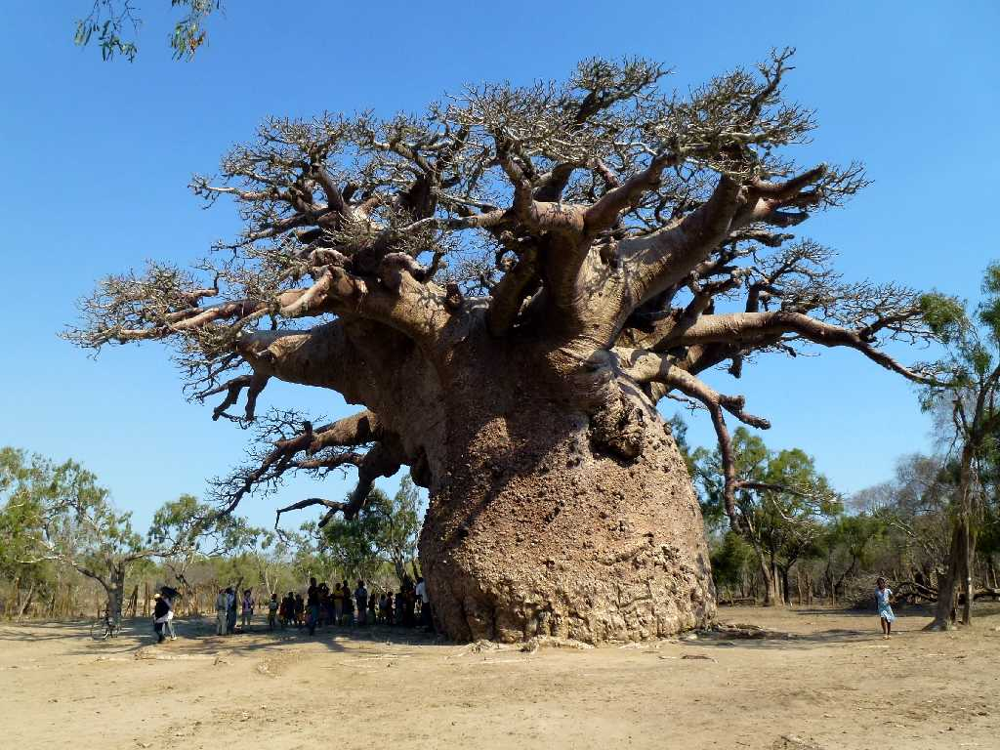
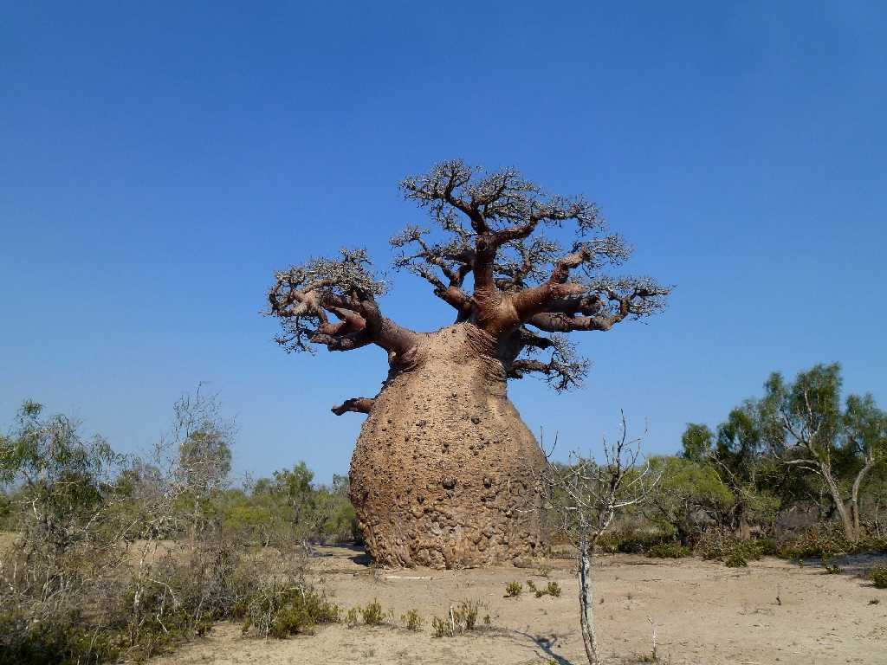
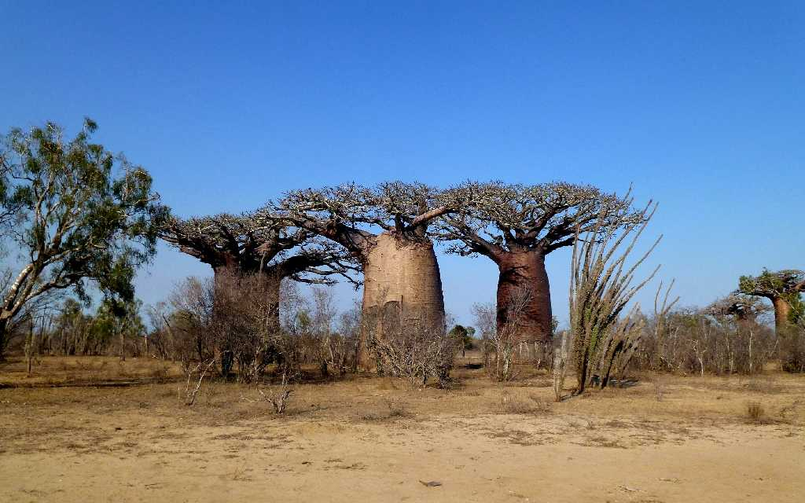
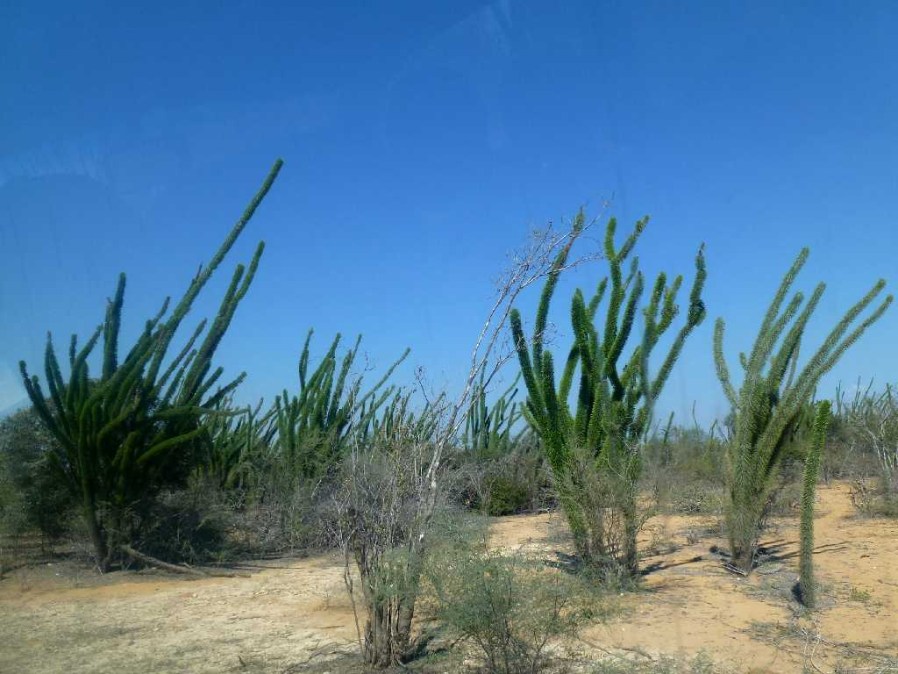
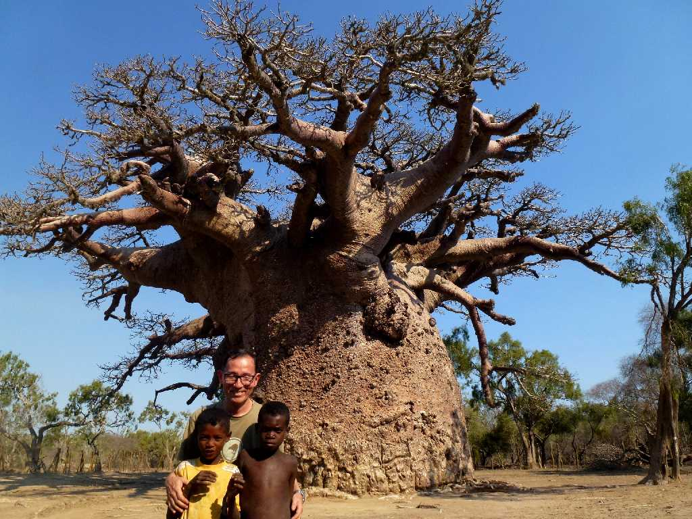

Baobab Andombiry Morombe
周囲２４ｍ直径７.5ｍもある世界最大級のバオバブ 樹齢約３,０００年 聖なるバオバブと云われ村人がお祈りしてから囲われた聖域の中に入ることができる

Barrel Baobab
樽型の大バオバブで周囲２０ｍ直径約６.5ｍもある

Three Brothers Baobab
３兄弟のバオバブ 中央に祭壇がある

Didierea Andombiry
タコの足の様に伸びるマダガスカルの固有種タコの木

October 17 2013 Andombiry